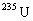
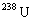
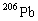
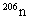
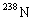
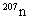
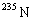
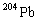
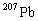

A bungee jumper is attached to one end of a long elastic rope. The other end of the elastic rope is fixed to a high bridge. The jumper steps off the bridge and falls, from rest, towards the river below. He does not hit the water. The mass of the jumper is m, the unstretched length of the rope is L, the rope has a force constant (force to produce 1 m extension) of k and the gravitational field strength is g.
You may assume that
A heat engine operates between two identical bodies at different temperatures T A and T B (T A > T B), with each body having mass m and constant specific heat capacity s. The bodies remain at constant pressure and undergo no change of phase.
Write your expression for the final temperature T 0 on the answer sheet.
The heat engine operates between two tanks of water each of volume 2.50 m3. One tank is at 350 K and the other is at 300 K.
Specific heat capacity of water = 4.19 ´ 103 J kg-1 K-1
Density of water = 1.00 ´ 103 kg m-3
It is assumed that when the earth was formed the isotopes  and
and

were present but not their decay products. The decays of
andObtain and insert on the answer sheet an expression for the number of

atoms, denoted
, produced by radioactive decay with time t, in terms of the present number of
, and the half- life time of
Write down on the answer sheet an equation relating

to
and the half-life of
, and
are measured and the number of atoms are found to be in the ratios 1.00 : 29.6 : 22.6 respectively. The isotope is used for reference as it is not of radioactive origin. Analysing a pure lead ore gives ratios of 1.00 : 17.9 : 15.5.Given that the ratio : is 137 : 1, derive and insert on the answer sheet an equation involving T.
Charge Q is uniformly distributed in vacuo throughout a spherical volume of radius R.
Insert your answers to (a) and (b) on the answer sheet.
A circular ring of thin copper wire is set rotating about a vertical diameter at a point within the Earth’s magnetic field. The magnetic flux density of the Earth’s magnetic field at this point is 44.5 mT directed at an angle of 64o below the horizontal. Given that the density of copper is 8.90 ´ 103 kg m-3 and its resistivity is 1.70 ´ 10-8 W m, calculate how long it will take for the angular velocity of the ring to halve. Show the steps of your working and insert the value of the time on the answer sheet. This time is much longer than the time for one revolution.
You may assume that the frictional effects of the supports and air are negligible, and for the purposes of this question you should ignore self-inductance effects, although these would not be negligible.